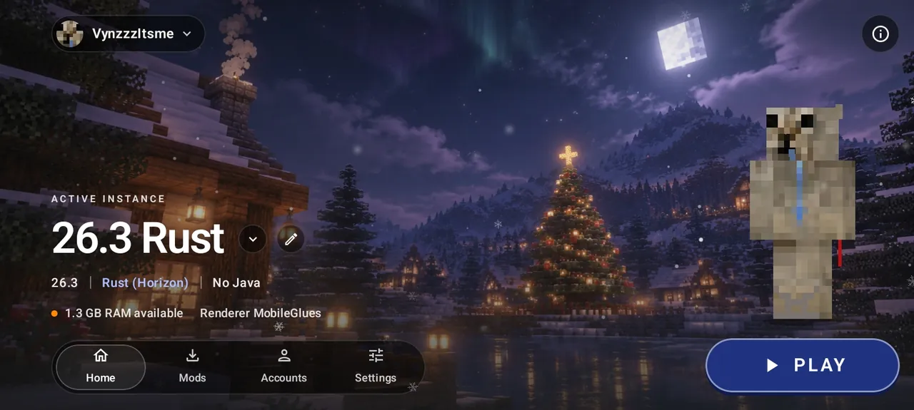

Minecraft Java,
langsung di Android.
AmberLauncher adalah launcher Minecraft Java Edition untuk Android. Buat instance, pasang mod dari Modrinth atau CurseForge, lalu main.
Butuh Android 8.0 ke atas dan RAM 3 GB ke atas. Cek keaslian APK.

Tampilan
Beberapa layar dari AmberLauncher.


Unduhan
Angka diambil langsung dari GitHub Releases.
Cara mulai
Dari pemasangan sampai masuk ke dunia.
- Buka AmberLauncher. Di Android 11 ke atas, izinkan akses penyimpanan agar data tersimpan di folder
nuxlauncher. Boleh dilewati; data lalu disimpan di folder privat aplikasi. - Tambahkan akun di menu Akun: Microsoft untuk bermain online, atau offline untuk bermain sendiri.
- Buat instance lewat Buat Instance: pilih versi Minecraft, lalu Vanilla, Fabric, Forge, atau NeoForge.
- Di Home, tekan UNDUH dan tunggu selesai (butuh internet), lalu tekan PLAY.
- Pasang mod, resource pack, dan shader lewat menu Mod.
Fitur
AmberLauncher adalah fork dari Zalith (lewat NUX Launcher), jadi sebagian besar kerja kerasnya milik mereka. Ini cuma beberapa hal kecil yang ditambahkan di atasnya, dan mungkin belum ada di launcher lain.
Tampilan
- Dua gaya: tema gelap bawaan, atau Liquid Glass, tempat panel jadi kaca buram di atas wallpaper (Pengaturan > Tampilan, Android 12 ke atas).
- Wallpaper sendiri: gambar, GIF, atau video, lengkap dengan peredup, warna aksen, dan cahaya latar yang mengikuti gambarnya.
- 6 bahasa: Bahasa Indonesia, English, Español, Tiếng Việt, Português (Brasil), dan ภาษาไทย.
Akun
- Microsoft, Ely.by, dan offline dalam satu daftar, dengan pratinjau skin dan jubah.
- Jalan juga di mesin Rust (Horizon): masuk dengan akun Microsoft, Ely.by, atau offline di sana juga.
Kontrol
- Impor layout dari launcher lain: berkas dari Zalith, Zalith 2, Pojav, dan Mojo diubah otomatis ke format AmberLauncher. Layout juga bisa disimpan sebagai preset.
- Macro: ketik chat atau perintah otomatis, kombinasi tombol, dan klik turbo di tombol apa saja.
- Editor kontrol sentuh: atur posisi, ukuran, transparansi, dan tombol. Ada hotbar ala Bedrock dan auto-sprint joystick yang bisa dimatikan.
- Controller (gamepad) didukung, termasuk mod seperti Controlify.
Game
- Instance terpisah dengan Vanilla, Fabric, Forge, dan NeoForge, plus Java 8, 17, 21, dan 25 bawaan.
- Pilihan renderer: Auto, Krypton, MobileGlues, GL4ES, Kopper Zink, dan Freedreno (Turnip).
- Mesin Rust (Horizon), masih eksperimental: jalan tanpa Java di versi yang didukung.
Mod dan konten
- Modrinth dan CurseForge langsung di aplikasi: mod, modpack, resource pack, shader, dan datapack beserta dependensinya.
- Buat instance dari modpack (.mrpack atau .zip CurseForge) sekali jalan. Pasang manual dari berkas juga bisa.
Lainnya
- Rekam layar bawaan: pilih Game saja atau Dengan tombol.
- Laporan crash dengan opsi unggah log ke mclo.gs.
- Pembaruan dari dalam aplikasi, APK 32-bit atau 64-bit dipilih otomatis.
- Dukungan mod TouchController (eksperimental).
Belum didukung: Forge untuk Minecraft 1.6.4 ke bawah, NeoForge untuk 1.20.1 ke bawah, dan Quilt.
Pilih APK
Kalau ragu, ambil yang 64-bit.
64-bit (arm64-v8a)
Hampir semua HP keluaran beberapa tahun terakhir.
32-bit (armeabi-v7a)
Untuk HP lama berCPU 32-bit. RAM game dibatasi sekitar 1,2 GB dan sebagian renderer tidak tersedia. Tidak selalu ada di setiap rilis.
Saat memasang pertama kali, Android bisa meminta izin memasang aplikasi dari browser atau pengelola berkasmu. Setelah itu, pembaruan bisa dipasang dari dalam launcher (Pengaturan > Pembaruan).
Pastikan APK asli
Untuk yang mengunduh dari tempat lain.
Semua APK resmi ditandatangani dengan kunci yang sama. Cocokkan sidik jari sertifikat APK dengan yang di bawah sebelum memasang.
Sidik jari sertifikat (SHA-256)ID aplikasi: com.itsvynzzzz.amberlauncher
Cara melapor celah keamanan ada di SECURITY.md.
Bantuan
Masalah yang sering muncul.
- Game tertutup sendiri atau crash. Beri RAM game tidak lebih dari sekitar setengah RAM HP, tutup aplikasi lain, atau turunkan rasio resolusi di Pengaturan. Laporan crash bisa dilihat dari dalam aplikasi.
- FPS rendah. Kecilkan jarak pandang, turunkan rasio resolusi, atau coba renderer lain di Pengaturan.
- Mod tidak jalan. Pastikan loader dan versi Minecraft instance sama dengan yang dibutuhkan mod.
- Menemukan bug? Buka Issue dan sertakan versi AmberLauncher, model HP dan versi Android, langkah yang menimbulkan masalah, serta log. Log yang dibagikan dari launcher sudah dibersihkan dari token dan kata sandi.
Privasi dan keamanan
Yang dilakukan launcher dengan akunmu.
- Kata sandi Microsoft tidak pernah disimpan. Login memakai jendela OAuth resmi Microsoft.
- Aset dan pustaka Minecraft diunduh langsung dari server resmi Mojang dan dicocokkan dengan sidik jari (SHA-1) resminya.
- Semua sambungan internet memakai HTTPS.
Kredit dan terima kasih
AmberLauncher dibangun di atas kerja banyak proyek lain.
Dasar proyek
| Proyek | Pembuat | Lisensi |
|---|---|---|
| NUX Launcher (sumber fork) | IsraaDeveloper | GPL-3.0 |
| Zalith Launcher 2 | MovTery dan kontributor | GPL-3.0 |
| PojavLauncher | artdeell, khanhtran, dan tim | LGPL-3.0 |
| Fold Craft Launcher | Tim FCL | GPL-3.0 |
Komponen yang dipakai
| Proyek | Pembuat | Lisensi |
|---|---|---|
| Horizon dan port Android-nya | Ludovic Marie, Vasysik, dan kontributor | MIT |
| MobileGlues | Tim MobileGlues | LGPL-2.1 |
| GL4ES | ptitSeb | MIT |
| LWJGL | Tim LWJGL | BSD-3-Clause |
| SDL3 dan sdl2-compat | Sam Lantinga dan kontributor | Zlib |
| Mesa 3D (Zink, Turnip, VirGL) | Para kontributor Mesa | MIT |
| ANGLE | Para penulis proyek ANGLE | BSD-3-Clause |
| ByteHook | ByteDance | MIT |
| authlib-injector | Yushijinhun | AGPL-3.0 |
| TouchController (klien proxy) | fifth_light | LGPL-3.0 |
| Jetpack Compose dan Material 3 | Android Open Source Project | Apache-2.0 |
| OkHttp dan Okio | Square | Apache-2.0 |
| sora-editor | Rosemoe | LGPL-2.1 |
| skinview3d | Kent Rasmussen dan kontributor | MIT |
| Gabarito (font situs ini) | The Gabarito Project Authors | OFL-1.1 |
Terima kasih
- Modrinth dan CurseForge atas katalog mod yang terbuka lewat API.
- Ely.by atas sistem skin dan autentikasinya, serta mclo.gs atas layanan berbagi log.
- Mojang Studios dan Microsoft atas Minecraft dan layanan loginnya.
- Tim Fabric, Forge, NeoForge, dan Quilt atas mod loader yang didukung.
- Pembuat mod Controlify dan TouchController, yang membuat bermain dengan controller dan layar sentuh lebih nyaman.
- Semua penguji dan pelapor bug yang membantu memperbaiki launcher ini.